多人单单独改期 · 名单表签证状态按人 · 代理议价申请 · 改单去程/单回程 · 备注保存 · 2026-09-01
解决了什么：三人一张单，以前改期只能整单一起改。现在改期弹窗里能勾人，勾几个改几个。
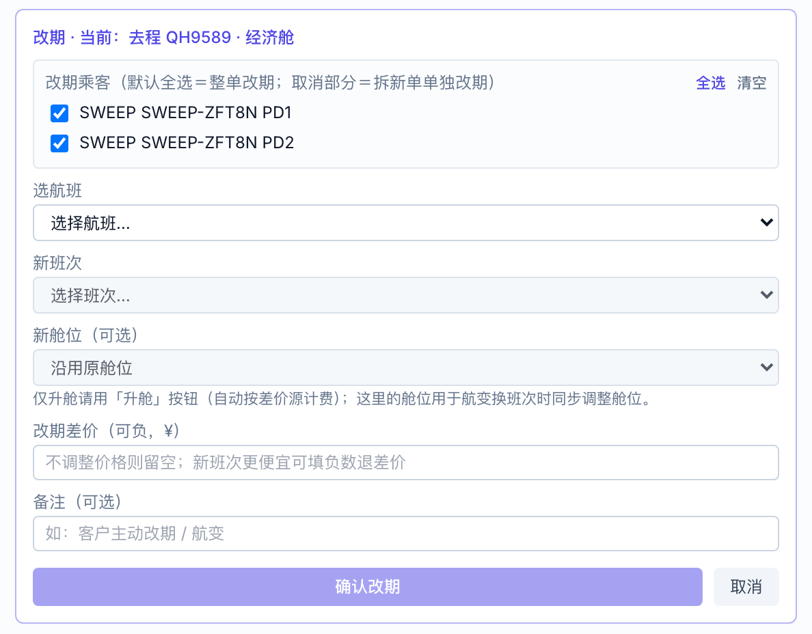
改期弹窗最上面多了乘客勾选，默认全选
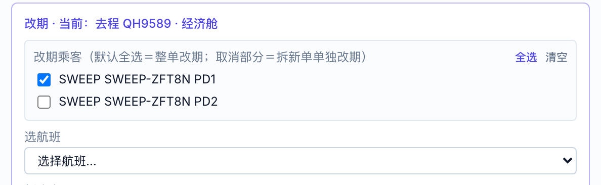
只勾一个人：这个人会被拆成一张新单再改期
| 勾的人 | 自动拆成一张新订单，新单号当场弹出，列表里能看到 |
| 新单 | 按你选的班次改期，改期差价记在新单上 |
| 原单 | 剩下的人不动，班次不变 |
| 钱 | 已收款按人头份额跟着人走，两张单各自对得上 |
| 已付清的单 | 也能这样拆了（以前付清的单不让拆） |
| 已出票的单 | 也能拆；拆出去的人改期后原票作废，需票务台重开 |
| 住宿 | 拼房按半间劈——没来的人带走半间和自己那份钱，两张单同酒店同房型同日期，房控页按 1 间计；单住的按整间跟着人走 |
| 升舱 | 升舱位数跟着拆走的人数填，两张单各自对得上 |
订单详情底部「运营工具」里的「拆单（拆出部分乘客）」是同一套逻辑的手工入口。勾人之后，弹窗会当场算出新单应收、随拆转移的已收款，套餐住宿行还会给一个建议间数（两个人拼一间、拆走一个人，就建议 0.5 间）；有升舱的单下面还会多一块「随拆走的升舱人数」。留空＝按人头自动分，填 0＝该行全留在原单。
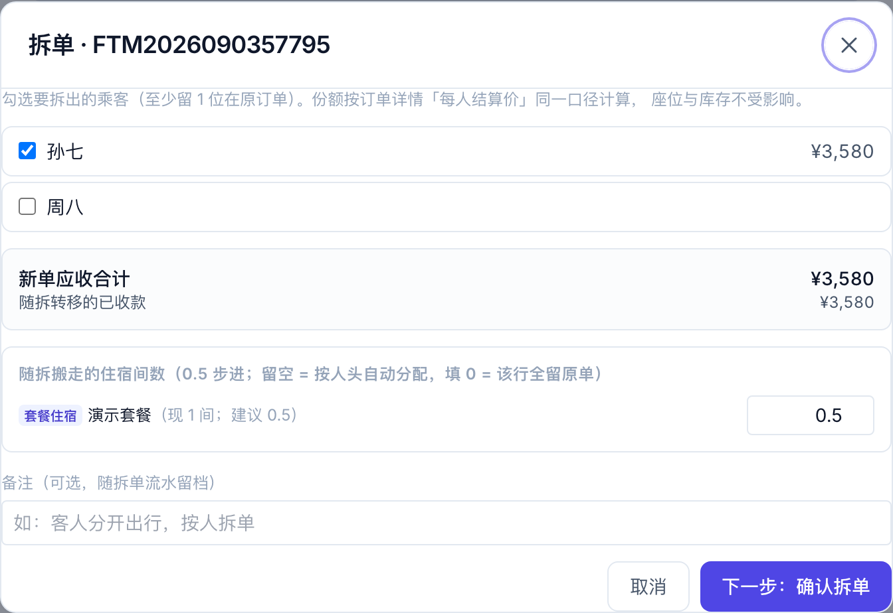
套餐单拆单弹窗：勾人后给出新单应收、随拆已收款，套餐住宿行带「套餐住宿」标和建议间数
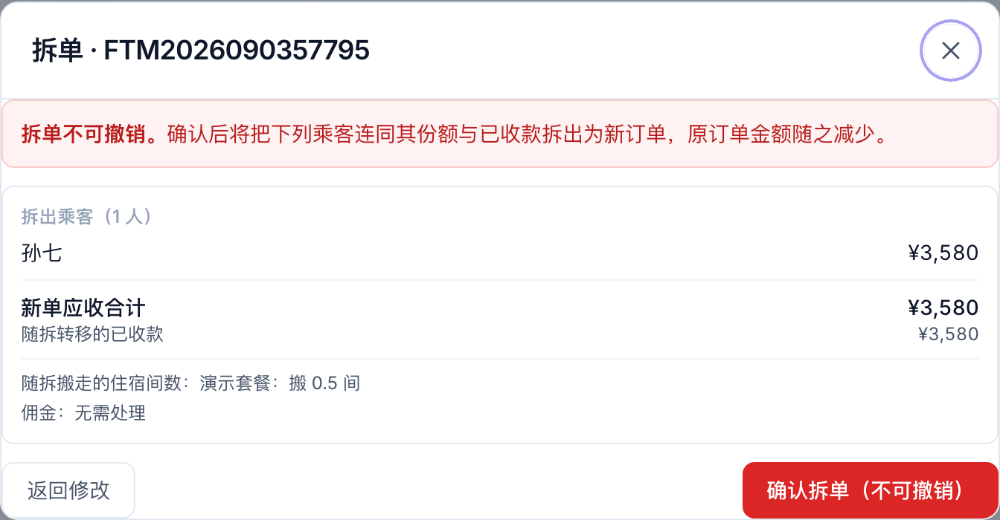
点「下一步」后的确认页：拆出乘客与份额、新单应收合计、住宿 / 升舱怎么搬、佣金要不要处理，一次核对清楚——确认后不可撤销
解决了什么：同一张单里自备签的客人，导出来以前也写「需要」；一个人送签了，全员都亮「已送签」。现在一人一个状态，复查的同事能直接看。
操作没变，还是订单管理页上方的「导出全岗总表」和《全岗可用》导出。
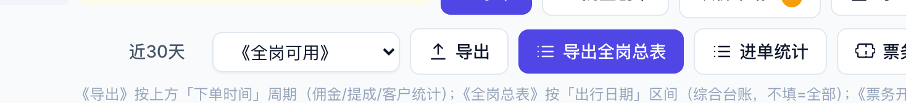
导出入口没变
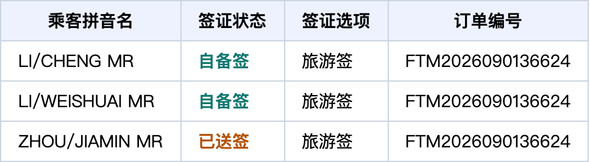
导出后「签证状态」列的样子（示意）
| 这位客人的情况 | 导出来写什么 |
|---|---|
| 自备签 | 自备签 |
| 签证台已送签 | 已送签 |
| 签证台材料准备中 | 材料准备 |
| 还没动 | 跟整单一样：需要 / 电子签 |
| 整单选了「不需要」或「已签证」 | 全员写整单的值，不看个人 |
解决了什么：报价表更新快，代理录单时系统按协议价算出来的结算价常常已经过时。现在代理对自己名下的单，在结算价锁定前可以自己填、自己改，改完立即生效，不用等运营确认。锁定后再改才走「议价申请」。
订单列表上方有「议价申请」按钮，橙色数字是待处理的条数。点开是队列，每行能直接确认或驳回，点单号可以打开那张单。
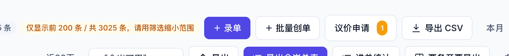
列表上方的入口，带待处理数
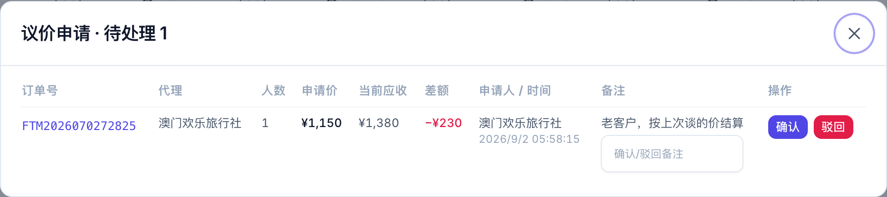
待处理队列：申请价、当前应收、差额一目了然
订单详情里也有一块「议价申请」，黄色卡片就是待处理的。
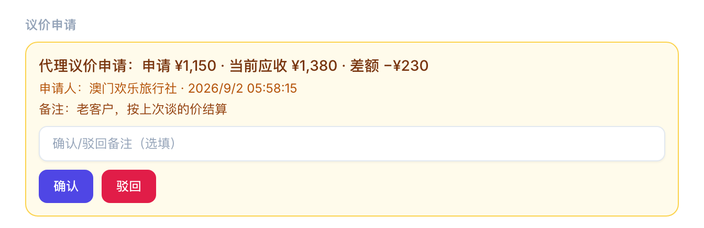
订单详情里的议价申请卡片
| 点什么 | 发生什么 |
|---|---|
| 确认 | 按「申请价 − 当前应收」生成一条调价，订单应收变成申请价。差额为正是补收，为负是优惠。 |
| 驳回 | 申请标为已驳回，可写原因，代理在订单详情里能看到。 |
解决了什么：客人只飞一段，以前没法把不要的那一段放回去卖。现在订单详情里每一段旁边都有取消按钮，取消后座位当场放回库存，订单变单程。
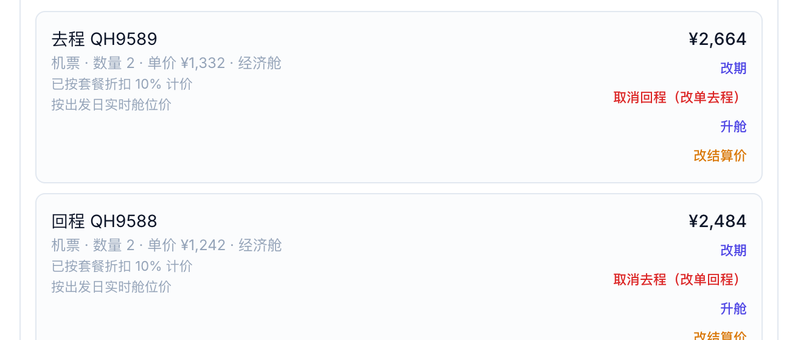
去程 / 回程两行各自的取消按钮
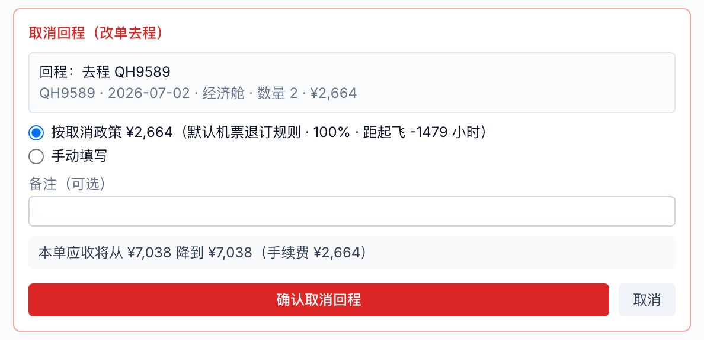
预检面板：这一段的金额、手续费、应收降幅
| 被取消那一段的座位 | 当场放回库存重新销售 |
| 订单 | 变成单程，只剩另一段 |
| 应收 | 减去这段的金额，再加上手续费 |
| 手续费 | 作为一条「取消去程/回程手续费」的调价行留在单上 |
| 被取消的那行 | 还在明细里，金额 ¥0，标着「已取消」，方便以后查 |
| 客人多付的钱 | 不会自动退，面板会提示多付了多少，到付款情况里走多收转预存款或退款 |
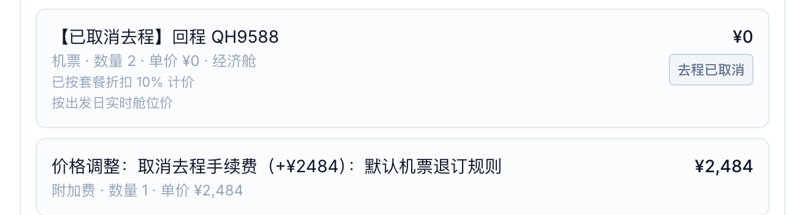
取消后那一行的样子
| 情况 | 怎么办 |
|---|---|
| 这段已经开票 | 先在票务台把对应航段改回「未开」 |
| 这段有确认出票记录（票务台已标该段已出票） | 现在可以取消：面板会琥珀色提示，勾选「已知悉」后确认，系统会自动给票务派一条「撤名单/退票」工单（在待办/工单里能看到），票务再去航司渠道办撤名单或退票 |
| 乘客身上有 PNR / 票号、但该段没有确认出票记录 | 只做提示，不需要勾选、不会派工单，请票务自行核对票的状态 |
| 结算价锁定 / 收款复核锁定 | 先解锁 |
| 有进行中的退款 | 先处理完退款 |
| 只想给部分人取消 | 先用「拆单」把这几个人拆出去，再对新单取消；套餐单同样适用 |
| 取消航段（本节） | no-show 释放（订单详情「no-show 处理」） | |
|---|---|---|
| 适用场景 | 客人主动不飞，要按退改政策退钱 | 客人没登机（航司 no-show 名单） |
| 钱 | 应收下降，按政策扣手续费 | 一分不动，不退不扣 |
| 能否恢复 | 不能，座位放出去就抢不回来 | 能，代理来要就「恢复回程」，有余位直接占，没余位走超售确认 |
| 算不算飞行次数 | ——（该段本就取消了） | 去程不计飞行次数（客人没坐这趟） |
| 已出票怎么办 | 可以取消，勾「已知悉」后系统自动派撤名单/退票工单给票务 | 回程座位释放时若已出票，同样自动派撤名单/退票工单；去程本身不涉及退票 |
解决了什么：改完备注往下翻找不到保存按钮。其实按钮一直在备注块正下方，只是以前改了字才出现。现在它一直在。
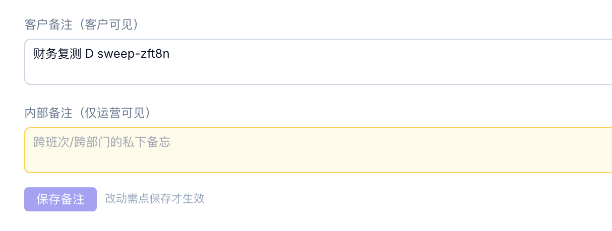
没改动时按钮是灰的，旁边写着「改动需点保存才生效」
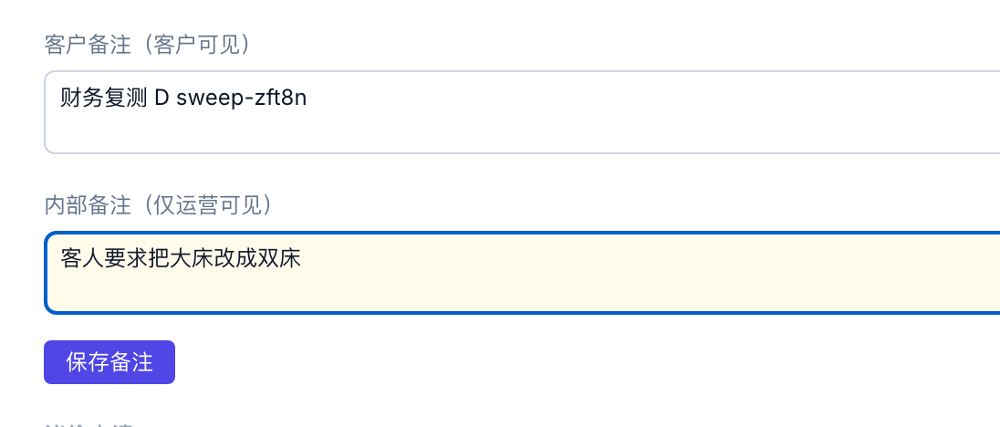
改了字按钮就亮起来，点一下保存
签证状态那个下拉也是靠这个按钮保存的。乘客旁边的「改自备签 / 改回随团」是点了当场生效，不用再保存。
改了字没保存就关窗口，会拦一下：
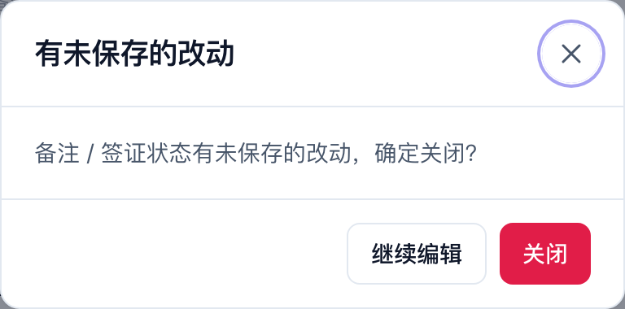
关窗口前的提醒，点「继续编辑」回去保存
世途旅行 · 运营控制台 | 反馈表（9）五项新功能操作说明 | 2026-09-01 | 文中金额与单号为演示数据